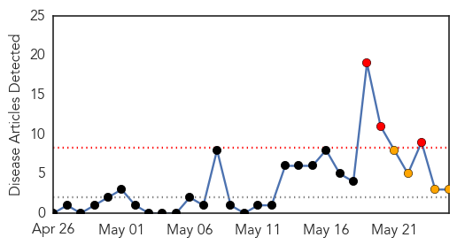
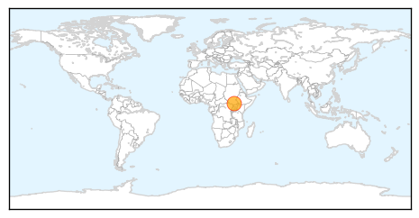
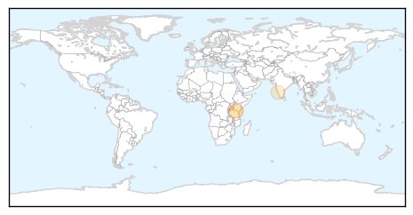

Cholera
30-Day Web Trend
3 alerts, 4 warnings

30-Day Twitter Trend
1 alerts, 0 warnings
Article Locations
Article Confidences

Top Articles:
Top Tweets:
-
No tweets found for May 25, 2014
Dengue Fever
30-Day Web Trend
0 alerts, 0 warnings
30-Day Twitter Trend
1 alerts, 0 warnings

Article Locations
Article Confidences

Top Articles:
Top Tweets:
- 0.672
- RT: “@BreakDengue: Dengue is causing anxiety in Tanzania. http://t.co/1rkf4lVCKa The number of dengue cases in the country has n…